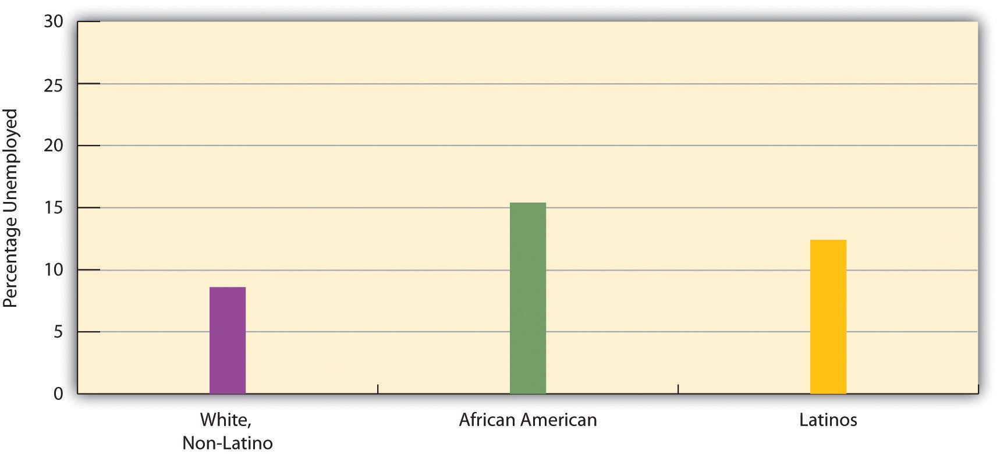

The history of work and labor in the United States reflects the change, discussed earlier, in economies from agricultural to industrial to postindustrial. From the time the colonies began in the 1600s until well into the 19th century, the United States was primarily an agricultural society, as people worked on their own farms, and the family was the major unit of economic production. With the advent of industrialization came machines and factories, and the secondary, manufacturing sector became dominant. In the decades after the Civil War, the Industrial Revolution transformed the nation.
One of the most important developments accompanying industrialization was the rise of labor unions and their conflict with management over wages and working conditions (Dubofsky & Dulles, 2010).Dubofsky, M., & Dulles, F. R. (2010). Labor in America: A history (8th ed.). Wheeling, IL: Harlan Davidson. The pay that workers received was quite low, and the conditions in which they worked were often miserable. The typical employee worked at least 10 hours a day for 6 or 7 days a week, with almost no overtime pay and no paid vacations or holidays. To improve wages and working conditions, many labor unions were founded after the Civil War, only to meet determined opposition from companies, the government, and the courts. Companies told each other which workers were suspected of being union members, and these workers were then prevented from getting jobs. Strikers were often arrested for violating laws prohibiting strikes. When juries began finding them not guilty, employers turned to asking judges for injunctions that prohibited strikes. Workers who then went on strike were held in contempt of court by the judge as juries were kept out of the process.
From the 1870s through the 1930s, labor unions fought companies over issues such as low wages and substandard working conditions.
Source: Photo courtesy of Special Collections and Archives, Georgia State University Library, http://www.library.gsu.edu/spcoll/spcollimages/labor/19clabor/Labor%20Prints/80-39_1.jpg.
Many strikes became violent, as companies brought in armed guards, state troopers, and strikebreakers to put down the strikes. Workers themselves rioted to protest their low wages and abject working conditions. Summarizing this period, two labor historians note that the United States “has had the bloodiest and most violent labor history of any industrial nation in the world” (Taft & Ross, 1990, p. 174).Taft, P., & Ross, P. (1990). American labor violence: Its causes, character, and outcome. In N. A. Weiner, M. A. Zahn, & R. J. Sagi (Eds.), Violence: Patterns, causes, public policy (pp. 174–186). San Diego, CA: Harcourt Brace Jovanovich. During an 1897 coal-mining strike in Pennsylvania, for example, 18 miners were killed and 40 wounded after being shot in the back by a sheriff’s deputies. Several years later, company guards and state troops in Ludlow, Colorado, opened fire on mining families as they fled from a tent city that the guards and troops had set on fire. Their bullets killed more than two dozen people, including 13 children (McGovern & Guttridge, 1972).McGovern, G. S., & Guttridge, L. F. (1972). The great coalfield war. Boston, MA: Houghton Mifflin.
Labor strife reached a peak during the Great Depression, as masses of people blamed business leaders for their economic plight. Huge sit-ins and other labor protests occurred in Detroit at auto plants. In response the Congress passed several laws that gave workers a minimum wage, the right to join unions, a maximum-hour workweek, and other rights that Americans now take for granted.
Today labor unions have lost some of their influence, especially as postindustrialization has supplanted the industrial economy and as the United States has lost much of its manufacturing base. Four decades ago, about one-fourth of all private-sector nonagricultural workers belonged to labor unions. By 1985 this figure had dropped to 14.6%, and today it stands at less than 8% (Hirsch & Macpherson, 2009).Hirsch, B., & Macpherson, D. (2009). Union membership and coverage database from the CPS. Retrieved from http://unionstats.com In response, labor unions have ramped up their efforts to increase their membership, only to find that U.S. labor laws are filled with loopholes that allow companies to prevent their workers from forming a union. For example, after a company’s workers vote to join a union, companies can appeal the vote, and it can take several years for courts to order the company to recognize the union. In the meantime, the low wages, the working conditions, and other factors that motivated workers to want to join a union are allowed to continue.
Recall that the United States has joined other industrial nations in moving into postindustrial economies. If physical prowess and skill with one’s hands were prerequisites for many industrial jobs, mental prowess and communication skills are prerequisites for postindustrial jobs.
This move to a postindustrial economy has been a mixed blessing for many Americans. The information age has obvious benefits too numerous to mention, but there has also been a cost to the many workers whom postindustrialization and the globalization of the economy have left behind. Since the 1980s many manufacturing companies moved their plants from U.S. cities to sites in the developing world in Asia and elsewhere, a problem called capital flightThe moving of manufacturing companies from U.S. cities to sites in the developing world in Asia and elsewhere.. This shift has helped fuel a loss of more than 1.5 million manufacturing jobs in the United States (Mishel, Bernstein, & Shierholz, 2009).Mishel, L., Bernstein, J., & Shierholz, H. (2009). The state of working America 2008/2009. Ithaca, NY: ILR Press [An imprint of Cornell University Press].
A related problem is outsourcingThe hiring by U.S. companies of overseas workers for customer care, billing services, and other jobs that Americans used to do., in which U.S. companies hire workers overseas for customer care, billing services, and other jobs that Americans used to do. China, India, and the Philippines, which have skilled workforces relatively fluent in English, are the primary nations to which U.S. companies outsource their work. At least 4 million jobs are estimated to have been transferred to these nations from the United States and other Western countries (Thomas, 2009).Thomas, M. (2009, July 16). Outsourcing statistics: What figures will tell you. EzineArticles. Retrieved from http://ezinearticles.com/?Outsourcing-Statistics---What-Figures-Will-Tell-You&id=2621948 Many call centers employ workers in India, and when you call up a computer company or some other business for technical help, you might very well talk with an Indian. Because these call centers have cost Americans jobs and also because Americans and Indians often have trouble understanding each other’s accents, outsourcing has been very controversial in the decade since it became popular.
All these problems reflect a more general shift in the United States from goods-producing jobs to service jobs. Although some of these service jobs, such as many in the financial and computer industries, are high paying, many are in low-wage occupations, such as restaurant and clerical work, that pay less than the goods-producing jobs they replaced. Partly as a result, the average hourly wage (in 2007 dollars) in the United States for workers (excluding managers and supervisors) rose only from $16.88 in 1979 to $17.42 in 2007. This change represented an increase of just 0.1% per year during that three-decade span (Mishel, Bernstein, & Shierholz, 2009).Mishel, L., Bernstein, J., & Shierholz, H. (2009). The state of working America 2008/2009. Ithaca, NY: ILR Press [An imprint of Cornell University Press].
These wage figures mask an important gender difference. Men’s median hourly wages dropped (in 2007 dollars) by 4.4% from 1979 to 2007, while women’s wages rose by 24.4% (while still remaining $3.11 less per hour than men’s wages in 2007) (Mishel, Bernstein, & Shierholz, 2009).Mishel, L., Bernstein, J., & Shierholz, H. (2009). The state of working America 2008/2009. Ithaca, NY: ILR Press [An imprint of Cornell University Press]. Although, as we saw in Chapter 11 "Gender and Gender Inequality", women have been catching up to men in wages, some of this catching up is due to the decline in male wages.
Wage changes in recent years also depend on what social class someone is in. While the average compensation of chief executive officers (CEOs) of large corporations grew by 167% from 1989 to 2007, the average compensation of the typical worker grew by only 10%. Another way of understanding this disparity is perhaps more striking. In 1965, CEOs earned 24 times more than the typical worker; in 2007 they earned 275 times more than the typical worker (Mishel, Bernstein, & Shierholz, 2009).Mishel, L., Bernstein, J., & Shierholz, H. (2009). The state of working America 2008/2009. Ithaca, NY: ILR Press [An imprint of Cornell University Press].
The civilian labor forceAll noninstitutionalized civilians 16 years old or older who work for pay or are looking for work. consists of all noninstitutionalized civilians 16 years of age or older who work for pay or are looking for work. The civilian labor force (hereafter labor force) consists of about 154 million people, or almost two-thirds of the population, including about 72% of men and 59% of women (Bureau of Labor Statistics, 2009).Bureau of Labor Statistics. (2009). Employment and earnings online. Washington, DC: Bureau of Labor Statistics, U.S. Department of Labor. Retrieved from http://www.bls.gov/opub/ee/home.htm Chapter 11 "Gender and Gender Inequality" noted that women’s labor force participation soared during the last few decades. This general increase is even steeper for married women with children under 6 years of age: in 2007 almost 62% of such women were in the labor force, compared to less than 19% in 1960 (U.S. Census Bureau, 2010),U.S. Census Bureau. (2009). Statistical abstract of the United States: 2009. Washington, DC: U.S. Government Printing Office. Retrieved from http://www.census.gov/compendia/statab a threefold difference (see Figure 13.2 "Labor Force Participation Rate, Percentage of Married Women with Children Younger Than 6 Years of Age, 1960–2007").
Figure 13.2 Labor Force Participation Rate, Percentage of Married Women with Children Younger Than 6 Years of Age, 1960–2007

Source: Data from U.S. Census Bureau. (2010). Statistical abstract of the United States: 2010. Washington, DC: U.S. Government Printing Office. Retrieved from http://www.census.gov/compendia/statab.
Unemployment is a fact of life. There will always be people laid off or fired, who voluntarily quit their jobs, or who just graduated school and are still looking for work. But most unemployed people are involuntarily unemployed, and for them the financial and psychological consequences can be devastating, as we saw at the beginning of this chapter.
Unemployment rates rise and fall with the economy, and the national unemployment rate was as high as 10.2% in October 2009 amid the Great Recession that began almost two years earlier; it was still 9.8% in November 2010, amounting to some 15.1 million people. But whether unemployment is high or low, it always varies by race and ethnicity, with African American and Latino unemployment rates higher than the white rate (see Figure 13.3 "Race, Ethnicity, and Unemployment Rate, June 2010"). Unemployment is also higher for younger people than for older people. In June 2010, 25.7% of all teenagers in the labor force (aged 16–19) were unemployed, a figure almost three times higher than that for adults. The unemployment rate for African Americans in this age group was a very high 39.9%, considerably greater than the 23.2% figure for whites in this age group (Bureau of Labor Statistics, 2010).Bureau of Labor Statistics. (2010). Employment and earnings online. Washington, DC: Bureau of Labor Statistics, U.S. Department of Labor. Retrieved from http://www.bls.gov/opub/ee/home.htm
Figure 13.3 Race, Ethnicity, and Unemployment Rate, June 2010
Source: Bureau of Labor Statistics (2010). Employment & earnings online. Retrieved from http://www.bls.gov/opub/ee/home.htm.
Unemployment figures are misleading in an important respect, as they do not include people who are underemployed. Underemployment includes unemployed and also two other types of people: (a) those who are working part time but who want to work full time and (b) those who have stopped looking for work because they have not been able to find a job. Many economists think that underemployment provides a more accurate measure than unemployment of the number of people with employment problems. For example, in June 2010, when the unemployment rate was 9.5% and 14.6 million people were officially unemployed, the underemployment rate was 16.5%, equal to more than 25 million people. Reflecting the racial/ethnic disparity in unemployment, 23.2% of Latino workers and 23.5% of African American workers were underemployed, compared to only 13.8% of white workers (Economic Policy Institute, 2010).Economic Policy Institute. (2010). Economy track. Retrieved from http://www.economytrack.org/underemployment.php Reflecting on the great amount of underemployment during the Great Recession, one economist commented, “When you combine the long-term unemployed with those who are dropping out and those who are working part time because they can’t find anything else, it is just far beyond anything we’ve seen in the job market since the 1930s” (Herbert 2010, p. A25).Herbert, B. (2010, August 10). The horror show. The New York Times, p. A25.
We have just seen that unemployment rises when the economy falters and that race and ethnicity affect the probability of being unemployed. These two facts provide evidence supporting the sociological imagination. As C. Wright Mills (1959)Mills, C. W. (1959). The sociological imagination. London, England: Oxford University Press. emphasized in his original discussion of this concept, unemployment is best viewed more as a public issue than as a personal trouble. When so many people are unemployed during an economic recession and when there is such striking evidence of higher unemployment rates among the persons of color who have the least opportunity for the education and training needed to obtain and keep a job, it is evident that high unemployment rates reflect a public issue rather than just a collection of public troubles.
Several kinds of problems make it difficult for people of color to be hired into jobs and thus contribute to the racial/ethnic disparity in unemployment. The “Sociology Making a Difference” box discusses these problems.
Race, Ethnicity, and Employment
Sociological research has documented that people of color face several kinds of problems in securing employment. While their relative lack of education is an obvious factor, other kinds of problems are also apparent.
One problem is racial discrimination on the part of employers, regardless of how conscious employers are of their discriminatory behavior. Chapter 10 "Race and Ethnicity" recounted a study by sociologist Devah Pager (2007),Pager, D. (2007). Marked: Race, crime, and finding work in an era of mass incarceration. Chicago, IL: University of Chicago Press. who had young white and African American men apply independently in person for various jobs in Milwaukee. These men wore the same type of clothing and reported similar levels of education and other qualifications. Some said they had a criminal record, while others said they had not committed any crimes. In striking evidence of racial discrimination in hiring, African American applicants without a criminal record were hired at the same low rate as white applicants with a criminal record. Pager and sociologists Bruce Western and Bart Bonikowski also investigated racial discrimination in another field experiment in New York City (Pager, Bonikowski, & Western, 2009).Pager, D., Bonikowski, B., & Western, B. (2009). Discrimination in a low-wage labor market: A field experiment. American Sociological Review, 74(5), 777–799. They had white, African American, and Latino “testers,” all of them “well-spoken, clean-cut young men” (p. 781), apply in person to low-level service jobs (e.g., retail sales and delivery drivers) requiring no more than a high school education; all the testers had similar (hypothetical) qualifications. Almost one-third (31%) of white testers received a call back or job offer, compared to only 25.2% of Latino testers and 15.2% of African American testers. The researchers concluded that their findings “add to a large research program demonstrating the continuing contribution of discrimination to racial inequality in the post-civil rights era” (p. 794).
Other kinds of evidence also reveal racial discrimination in hiring. Two scholars sent job applications in response to help-wanted ads in Boston and Chicago (Bertrand & Mullainathan, 2003).Bertrand, M., & Mullainathan, S. (2003). Are Emily and Greg more employable than Lakisha and Jamal? A field experiment on labor market discrimination. National Bureau of Economic Research (Working Paper No. 9873). Retrieved from http://papers.nber.org/papers/w9873.pdf They randomly assigned the applications to feature either a “white-sounding” name (e.g., Emily or Greg) or an “African American–sounding” name (e.g., Jamal and Lakisha). White names received 50% more callbacks than African American names for job interviews.
Racial differences in access to the informal networks that are often so important in finding a job also contribute to the racial/ethnic disparity in employment. In a study using data from a nationwide survey of a random sample of Americans, sociologist Steve McDonald and colleagues found that people of color and women are less likely than white males to receive informal word of vacant, high-level supervisory positions (McDonald, Nan, & Ao, 2009).McDonald, S., Nan, L., & Ao, D. (2009). Networks of opportunity: Gender, race, and job leads. Social Problems, 56(3), 385–402.
As these studies indicate, research by sociologists and other social scientists reveals that race and ethnicity continue to make a difference in employment prospects for Americans. This body of research reveals clear evidence of discrimination, conscious or unconscious, in hiring and also of racial/ethnic differences in access to the informal networks that are often so important for hiring. By uncovering this evidence, these studies underscore the need to address discrimination, access to informal networks, and other factors that contribute to racial and ethnic disparities in employment. For this reason, sociology is again making a difference.

Long-term unemployment often causes various social and psychological difficulties.
Source: Photo courtesy of Michael Raphael at the Federal Emergency Management Agency, http://www.photolibrary.fema.gov/photolibrary/photo_details.do?id=29783.
Although the news article that began this chapter gave us a heartrending account of a woman experiencing long-term unemployment, survey data also provide harsh evidence of the social and psychological effects of being unemployed. In July 2010, the Pew Research Center issued a report based on a survey of 810 adults who were currently unemployed or had been unemployed since the Great Recession began in December 2007 and 1,093 people who had never been unemployed during the recession (Morin & Kochhar, 2010).Morin, R. and Kochhar, R. (2010). Lost income, lost friends—and loss of self-respect: The impact of long-term unemployment. Washington, DC: Pew Research Center. The report’s title, Lost Income, Lost Friends—and Loss of Self-Respect, summarized its major findings. Of those who had been unemployed for at least 6 months (long-term unemployment), 44% said that the recession had caused “major changes” in their lives, versus only 20% of those who had never been unemployed. More than half of the long-term unemployed said their family income had declined, and more than 40% said that their family relations had been strained and that they had lost contact with close friends. In another finding, 38% said they had “lost some self-respect” from being unemployed. One-third said they were finding it difficult to pay their rent or mortage, compared to only 16% of those who had never been unemployed during the recession. Half had borrowed money from family or friends to pay bills, versus only 18% of the never unemployed. Of all the people who had been unemployed, almost half had experienced sleep difficulties, and 5% had experienced drug or alcohol problems. All these numbers paint a distressing picture of the social and psychological impact of unemployment during the Great Recession that began in late 2007.
Recall that Karl Marx thought that job alienation was a major problem in industrial societies. Following up on his concern, social scientists have tried to determine the extent of worker alienation and job satisfaction, as well as the correlates of these two attitudes (Bockerman & Ilmakunnas, 2009).Bockerman, P., & Ilmakunnas, P. (2009). Job disamenities, job satisfaction, quit intentions, and actual separations: Putting the pieces together. Industrial Relations, 48(1), 73–96. They generally find that American workers like their jobs much more than Marx anticipated, but also that the extent to which they like their jobs depends on the income their jobs bring, the degree of autonomy they enjoy in their jobs, and other factors.
One way of measuring job satisfaction is simply to ask people, “On the whole, how satisfied are you with the work you do?” The General Social Survey uses precisely this question, and 85.8% of respondents (2008 data) say they are satisfied with their jobs, with only 14.1% saying they are dissatisfied. This latter figure is probably lower than Marx would have predicted for a capitalist society like the United States.
One possible reason for the low amount of job dissatisfaction, and one that Marx did not foresee, is that workers develop friendships in their workplace (McGuire, 2007).McGuire, G. M. (2007). Intimate work: A typology of the social support that workers provide to their network members. Work and Occupations, 34, 125–147. Coworkers discuss all kinds of topics with each other, including personal matters, sports, and political affairs, and they often will invite other coworkers over to their homes or go out with them to a movie or a restaurant. Such friendships can lead workers to like their jobs more than they otherwise would and help overcome the alienation they would feel without the friendships. Such coworker friendships are quite common, as research finds that about half of all workers have at least one close friend who is a coworker (Marks, 1994).Marks, S. R. (1994). Intimacy in the public realm: The case of co-workers. Social Forces, 72, 843–858.
An unfortunate fact about work and labor in the United States is crime in the workplace. Two major types of such crime exist: employee theft and workplace violence.
Chapter 7 "Deviance, Crime, and Social Control" briefly discussed employee theftTheft of objects or money by employees from their workplaces. as one of the many types of crime that occur in the United States and elsewhere. Employee theft takes two forms, pilferage and embezzlement. PilferageThe stealing of goods by employees from their workplaces. involves the stealing of goods, while embezzlementThe stealing of money in its various dimensions (cash, electronic transactions, etc.) by employees from their workplaces. involves the stealing of money in its various dimensions (cash, electronic transactions, etc.). Whichever form it takes, employee theft is so common that is has been called a “widespread, pervasive, and costly form of crime” (Langton, Piquero, & Hollinger, 2006, p. 539).Langton, L., Piquero, N. L., & Hollinger, R. (2006). An empirical test of the relationship between employee theft and low self-control. Deviant Behavior 27(5), 537–565. It is estimated that about 75% of employees steal at least once from their employers and that the annual amount of employee theft is $19.5 billion (National Retail Federation, 2007).National Retail Federation. (2007, June 11). Retail losses hit $41.6 billion last year, according to National Retail Security Survey. [Press release]. Retrieved from http://www.nrf.com/modules.php?name=News&op=viewlive&sp_id=318
Employee theft occurs for many reasons, but a common reason is worker dissatisfaction with various aspects of their job. They may think their wages or salaries are too low, they may feel they have been treated unfairly by their employer, and so forth. As the estimates of the amount of employee theft suggest, this form of theft is not condemned by many people, and, indeed, many workplaces have informal norms that approve of certain forms of theft—for example, it is okay to steal inexpensive objects such as (depending on the workplace) utensils, food, pencils and pens, or toilet paper. Not surprisingly, embezzlement is often more costly to an employer than pilferage; although it can involve just a few dollars from a cash register, it can also involve hundreds of thousands or millions of dollars acquired through more sophisticated means. In an example of a very costly embezzlement, the head cashier at the University of California, San Francisco, received a 7-year prison term for embezzling more than $4 million (Chiang, 2004).Chiang, H. (2004, July 2). Ex-UCSF employee gets 7-year sentence. San Francisco Chronicle. Retrieved from http://www.sfgate.com/cgi-bin/article.cgi?f=/chronicle/archive/2004/2007/2002/BAG2004S2007EU2921.DTL
When we think of employee theft, we probably usually think of theft by blue-collar or lower white-collar employees. However, physicians, attorneys, and other professionals also steal from their patients/clients or from the government, even if their form of theft is often much more complex and sophisticated than what the term “employee theft” may usually imply. Attorneys may bill their clients for work that was never done, and physicians may bill Medicare or private insurance for patients they never saw or for procedures that were never performed. We call this form of “employee” theft professional fraud. Fraud by physicians and other health-care professionals (including nursing homes and medical testing laboratories) is thought to amount to $100 billion every year (Rosoff, Pontell, & Tillman, 2010),Rosoff, S. M., Pontell, H. N., & Tillman, R. (2010). Profit without honor: White collar crime and the looting of America (5th ed.). Upper Saddle River, NJ: Prentice Hall. a figure that far exceeds the $19.5 billion in “conventional” employee theft and the similar figure lost to property crime (robbery, burglary, larceny, and motor vehicle theft).
In August 2010, a disgruntled employee went on a shooting rampage inside a beer distributor warehouse in Manchester, Connecticut, killing eight people before shooting himself. He had just been told he would be fired or forced to resign after being caught stealing beer and began the shootings at the end of a disciplinary hearing (Rivera & Haughney, 2010).Rivera, R. and Haughney, C. (2010, August 5). Amid mourning, eerie details emerge about Connecticut shootings. The New York Times, p. A19.
Many people die or are injured by acts of violence at their workplaces every year in the United States. In 2008, 517 people were slain at their workplaces, according to the U.S. Bureau of Labor Statistics. As disturbing as this number was, it represented a sharp drop from the numbers that prevailed a decade earlier, when 1,080 workplace homicides occurred in 1994. From 2003 through 2008, an average of 497 workplace homicides occurred every year (Needleman, 2010).Needleman, S. E. (2010, August 10). When violence strikes the workplace. Wall Street Journal. Retrieved from http://online.wsj.com/article/SB10001424052748704164904575421560153438240.html?mod=googlenews_wsj
In terms of who is involved and the reasons for their involvement, three kinds of workplace homicides are the most common. The first and by far the most common type is homicide as the result of robbery. This category includes the many store clerks, gas station attendants, taxi drivers, and other employees who are slain during a robbery, as well as police who are killed as they try to stop a robbery or apprehend the offender. The second category is homicide committed as an act of domestic violence; in this type, the offender, almost always a man, seeks out his wife or girlfriend (or ex-wife or ex-girlfriend) at her workplace and kills her. The third category involves disgruntled workers, such as the one at the Connecticut beer distributor just discussed, who kill one or more people at their workplace whom they blame for problems the killers have been having. Although this type of homicide is the type that the phrase “workplace violence” or “workplace killings” usually brings to mind, it is actually the least common of the three types listed here (Fox, 2010).Fox, J. A. (2010, August 5). Workplace homicide: What is the risk? [Web log post]. Retrieved from http://boston.com/community/blogs/crime_punishment/2010/08/workplace_homicide_the_risks.html
As noted, workplace violence was more common during the 1990s than today, reflecting a general drop in U.S. violence since that decade. National survey evidence indicates that an average of about 1.7 million acts of violence occurred every year in the workplace during the 1990s: 900 homicides, 70,000 robberies, 1.6 million aggravated and simple assaults, and more than 36,000 rapes and sexual assaults (Duhart, 2001).Duhart, D. T. (2001). Violence in the workplace, 1993–99. Washington, DC: Bureau of Justice Statistics, U.S. Department of Justice.